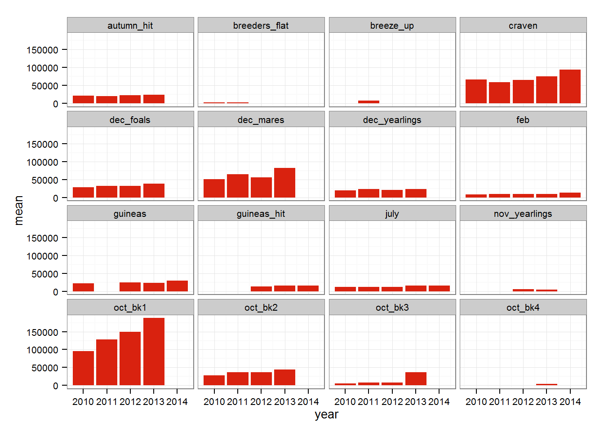

There are currently (as of 22/10/14) 5 datasets with Tattersalls sales data, these are:
| Name | Sales included | Dim |
|---|---|---|
| tatts_2010 | dec_mares, dec_foals, dec_yearlings, autumn_hit, breeders_flat, oct_bk3, oct_bk2, oct_bk1, sept, july, guineas, craven, feb | 8346 rows, 12 cols |
| tatts_2011 | dec_mares, dec_foals, dec_yearlings, autumn_hit, breeders_flat, oct_bk3, oct_bk2, oct_bk1, sept, july, breeze_up, craven, feb | 7488 rows, 12 cols |
| tatts_2012 | dec_mares, dec_foals, dec_yearlings, nov_yearlings, autumn_hit, oct_bk3, oct_bk2, oct_bk1, sept, july, guineas_hit, guineas, craven, feb | 7739 rows, 12 cols |
| tatts_2013 | dec_mares, dec_foals, dec_yearlings, nov_yearlings, autumn_hit, oct_bk4, oct_bk3, oct_bk2, oct_bk1, sept, july, guineas_hit, guineas, craven, feb | 8867 rows, 12 cols |
| tatts_2014 | sept, july, guineas_hit, guineas, craven, feb | 2174 rows, 12 cols |
There is a function to collect data from sales not included in the package, see here.
To load a dataset:
data(tatts_2010)Each of the 5 datasets have the same 12 variables, year, sale, sale_name, lot_no, horse, sex, color, sire, dam, seller, buyer, price, as can be seen in the table above, the same sales take place each year.
It is easy to combine the 5 datasets, such as:
data(tatts_2010, tatts_2011, tatts_2012, tatts_2013, tatts_2014)
# combine all 5 datasets into one large dataset
tattersalls <- rbind(tatts_2010, tatts_2011, tatts_2012, tatts_2013, tatts_2014)
# clean workspace
rm(tatts_2010, tatts_2011, tatts_2012, tatts_2013, tatts_2014)The new tattersalls dataset has 31716 rows and 12 columns, the sale_name variable can serve as an individual sale (so it includes the year of the sale, eg. feb_2010), while the sale variable will match across multiple years.
Loading other libraries dplyr and ggplot2 we can quickly analyse data:
library(dplyr)
library(ggplot2)The average price of lots in each sale across multiple years:
sale_summaries <- tattersalls %>%
group_by(sale, year) %>%
summarise(n = n(),
mean = mean(price, na.rm=T))
ggplot(sale_summaries, aes(x=year, y=mean)) +
geom_bar(stat="identity", fill="#D9220F") +
theme_bw() +
theme(text = element_text(size=10)) +
facet_wrap(~sale)
One thing stands out immediately from the plots above, don’t go to October Book 1 unless you have deep pockets, the average price of lots has doubled from 96,001 Guineas in 2010 to 188,068 Guineas in 2013 (2014 isn’t included in the tatts_2014 dataset yet). The Craven sale has also seen a small increase over recent years, but prices are in other sales appear to be very consistent.
We can also find the 20 sires with the highest average price over the 5 years:
tattersalls %>%
group_by(sire) %>%
summarise(n = n(),
mean = mean(price, na.rm=T),
sd = sd(price, na.rm=T),
min = min(price, na.rm=T),
max = max(price, na.rm=T)) %>%
filter(n >= 50) %>%
arrange(desc(mean)) %>%
head(20)## Source: local data frame [20 x 6]
##
## sire n mean sd min max
## 1 sea the stars (ire) 102 212922.08 143772.55 16000 590000
## 2 galileo (ire) 488 199765.30 407846.14 800 5000000
## 3 danehill (usa) 50 126065.12 387885.12 2000 2400000
## 4 new approach (ire) 182 105120.00 103159.38 2500 500000
## 5 sadler's wells (usa) 140 104800.88 212350.10 1000 1700000
## 6 montjeu (ire) 288 102570.64 150041.28 800 850000
## 7 monsun (ger) 74 94640.68 114118.87 2000 600000
## 8 fastnet rock (aus) 97 90364.86 86581.27 4000 540000
## 9 oasis dream (gb) 501 83408.95 134195.03 800 1100000
## 10 dansili (gb) 383 82450.00 190375.13 800 2700000
## 11 raven's pass (usa) 110 81441.84 109440.36 800 800000
## 12 invincible spirit (ire) 571 79318.65 131856.61 800 2100000
## 13 danehill dancer (ire) 453 79052.05 232405.64 800 4000000
## 14 dubawi (ire) 336 77525.18 98060.95 800 650000
## 15 rip van winkle (ire) 100 72958.33 65901.54 4000 400000
## 16 pivotal (gb) 534 71564.40 241596.80 800 4700000
## 17 arch (usa) 77 66803.57 82477.20 2000 300000
## 18 teofilo (ire) 353 61426.28 70607.26 800 600000
## 19 elusive quality (usa) 163 60969.75 94181.60 1000 760000
## 20 speightstown (usa) 57 59585.37 65556.26 2000 320000Sea The Stars is top of the list, his progeny costing a cool 212,922 Guineas on average, Galileo is a close second, with a large gap down to Danehill. Perhaps more interesting than Sea The Stars topping Galileo is the standard deviation of their prices, Sea The Stars with a much smaller sd perhaps suggests buyers believe his progeny will prove to be successful (see Taghrooda), but are still showing some restraint and aren’t quite willing to part with the big sums seen with Galileo, whose most expensive sale fetched 9 times the most expensive Sea The Stars sale.
It’s also possible to look at the buyers or agents with the highest average price paid over the 5years.
tattersalls %>%
group_by(buyer) %>%
summarise(n = n(),
mean = mean(price, na.rm=T),
sd = sd(price, na.rm=T),
min = min(price, na.rm=T),
max = max(price, na.rm=T)) %>%
filter(n >= 50) %>%
arrange(desc(mean)) %>%
head(20)## Source: local data frame [20 x 6]
##
## buyer n mean sd min max
## 1 demi o'byrne 50 344060.00 267094.37 6000 1300000
## 2 john ferguson bloodstock 240 183129.17 273817.36 25000 4000000
## 3 shadwell estate company 201 156452.74 131199.46 35000 1100000
## 4 c gordon-watson bloodstock 229 142248.03 194525.93 800 1700000
## 5 david redvers bloodstock 182 123344.51 231901.84 5000 2500000
## 6 mccalmont bloodstock 50 120390.00 208791.74 6500 1150000
## 7 john warren bloodstock 93 118645.16 95735.10 11000 600000
## 8 cheveley park stud 56 112732.14 99345.04 32000 535000
## 9 dwayne woods 60 95391.67 78483.30 3000 450000
## 10 blandford bloodstock 399 77259.65 102672.45 800 925000
## 11 richard frisby bloodstock 79 77018.99 87915.26 2000 370000
## 12 anthony stroud bloodstock 193 73031.09 70601.23 800 380000
## 13 peter & ross doyle bloodstock 330 65541.52 69462.18 800 800000
## 14 stephen hillen bloodstock 160 64431.25 171809.90 3000 2100000
## 15 hugo merry bloodstock 129 63468.22 90082.13 1700 675000
## 16 sackvilledonald 170 63355.88 59811.45 2500 460000
## 17 jeremy brummitt 55 60072.73 80168.54 10000 475000
## 18 kern/lillingston association 116 54304.31 62116.30 3800 460000
## 19 bba ireland 529 53180.34 213431.73 800 4700000
## 20 margaret o'toole (ire) 119 45928.57 30997.76 5000 165000Demi O’Byrne (an agent associated with Coolmore) isn’t as active as others in the top 5, with just 50 purchases, but the average price he pays is almost double that of John Ferguson (links with Godolphin).